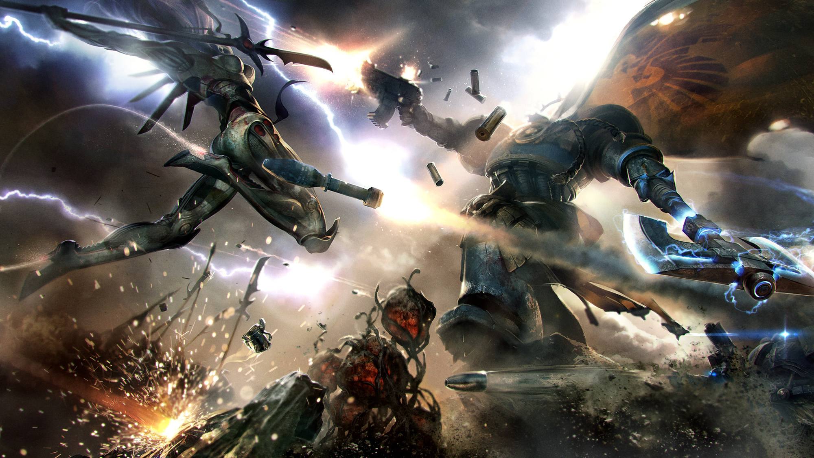
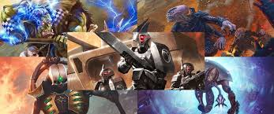
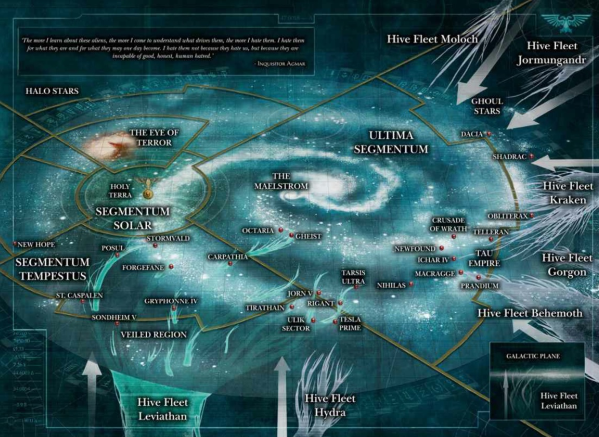

Warhammer 40k, a drama filled galaxy of war and factions going against one another
where the dying imperium of man is apparently the strongest of them all
in the galaxy, there are about 7-9 different faction, some are human while others look completely different.
There are Elves, Robotic Mummies, Humanoids, Orks, Daemons and even World Eating Bugs fighting for territory
none of them actually having an overall edge over the others. It is one of, if not, the most famous Science Fiction out there
having millions of fans around the world, and it all started with a simple table top game.

Xenos, or aliens, come in all sorts of flavour and types, from Evil to "Good" they're all disliked by
the Imperium of Man. Some are too stupid to die, like the Orks who are actually fungi who regenerate the more they fight.
While some are too few in number like the Tau or the Alderi, who fight not to expand but to survive. Surviving in the Imperium
is a difficult task and should not be taken lightly

However, out of all the Xenos, my favourite has got to be the Tyranids, they're a force to be reckoned with. To me
they're a force of nature, like ants who don't really care about self preservation and are pushed forward by one thing:
the preservation of their species. Its pretty terrifying to fight one of these guys as they come in hordes, their main
strategy being "Overwhelm them", skies blotted out and oceans clogged. Their main objective when they land on a world?
to devour all biomass, from living things to water, they suck the planet dry and move on. "There is no long term plan,
there is no sustainability, there is no choice but to consume you as well". In one of the story, they were so numerous
they blocked out the ventilation shafts and suffocated the people hiding underground as the air could not get through
to them, truly terrifying.
